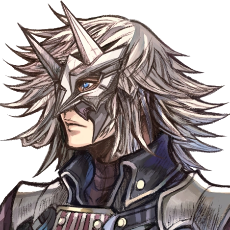

Jin

In Xenoblade Chronicles 2, Jin is an antagonist. Seconded by Malos, he is the leader of the covert group Torna, which seeks to track down and apprehend Pyra.
Jin's abilities center on using ice and having lightning-fast movement; she was formerly referred to be the Paragon of Torna. His abilities have significantly increased since he became a Flesh Eater, and he can now control elementary particles, though occasionally he experiences excruciating pain.
Quotes
"If the Architect does indeed exist, I wish I could ask him... who am I, truly? Whence did I come? Whither am I headed?"
---
"I am who I am. I do not change."
---
"Presumptuous, aren't you?"